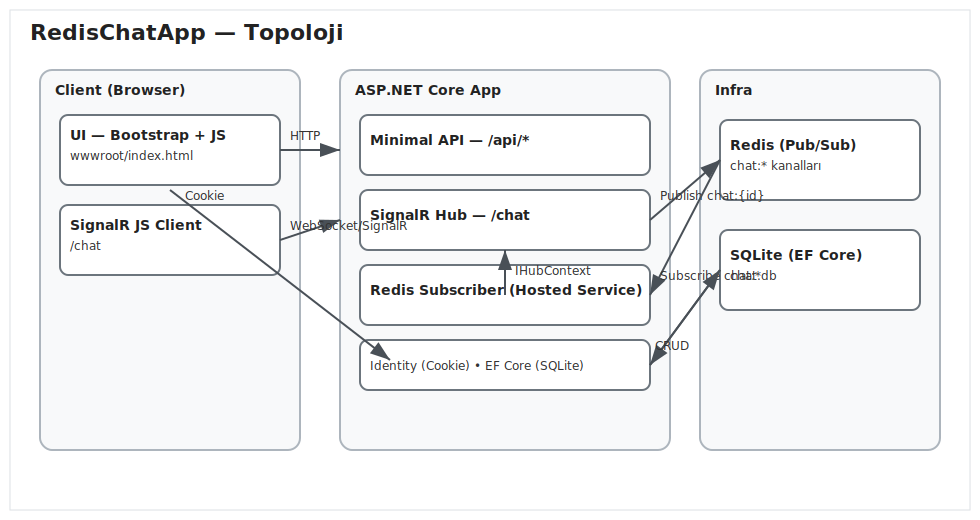

RedisChatApp — Teknik Doküman
Sürüm: 1.0 • Tarih: 18 Ağustos 2025
Kapsam: ASP.NET Core + SignalR + Redis (Pub/Sub) + EF Core (SQLite) gerçek zamanlı özel sohbet uygulaması
1. Giriş
Amaç
Bu doküman, RedisChatApp projesinin teknik detaylarını; mimari, kullanılan teknolojiler, veri modeli, API/HUB sözleşmeleri, güvenlik, dağıtım ve operasyonel konuları içerecek şekilde açıklamak için hazırlanmıştır.
Kapsam
Uygulama; kullanıcı kimlik doğrulaması, arkadaşlık yönetimi (istek/yanıt/engelleme), gerçek zamanlı özel mesajlaşma ve mesaj geçmişi sunar. Tek sayfalık bir web istemcisi ile (Bootstrap + JS) çalışır.
Hedefler
- Düşük gecikmeli gerçek zamanlı iletişim
- Basit kurulum: Docker ve tek dosya SQLite
- Kolay konfigürasyon: Ortam değişkenleri/JSON
2. Mimari Genel Bakış
Uygulama, ASP.NET Core üzerinde Minimal API ve SignalR Hub kullanır. Mesajlar, Redis Pub/Sub ile yayınlanır; abonelik yapan bir arka plan hizmeti (IHostedService) bu mesajları SignalR üzerinden hedef kullanıcıya iletir. Kalıcı veri katmanı EF Core (SQLite) ile sağlanır. Kimlik doğrulama ASP.NET Core Identity (cookie) üzerindendir.

Şekil 1 — Sistem topolojisi ve veri akışları
Bileşenler
- Web İstemcisi: Bootstrap + Vanilla JS + SignalR JS client
- Uygulama Sunucusu: Minimal API uçları + SignalR Hub + Redis Subscriber
- Altyapı: Redis (Pub/Sub), SQLite (veritabanı)
3. Kullanılan Teknolojiler ve Seçim Gerekçeleri
- ASP.NET Core 9.0 (Minimal API)
- Modern, yüksek performanslı ve az törenli API geliştirme modeli. .NET ekosistemi ve barındırma seçenekleri geniş. Minimal API ile daha az kod, hızlı bootstrap.
- SignalR
- Gerçek zamanlı iletişim için WebSockets öncelikli; gerektiğinde Long Polling/Server-Sent Events yedekleri. Oturum ve yetkilendirme entegrasyonu güçlü.
- Redis (StackExchange.Redis)
- Pub/Sub ile çoklu uygulama örnekleri arasında (scale-out) mesaj dağıtımı. Düşük gecikme, yaygın yönetilebilirlik. Upstash gibi yönetilen servislerle kolay bulut dağıtımı.
- EF Core (SQLite)
- Geliştirme ve demo için dosya tabanlı, sıfır sunucu kurulumlu veritabanı. EF Core ile güçlü LINQ/izleme. Üretimde ihtiyaç olursa kolayca başka bir sağlayıcıya taşınabilir.
- ASP.NET Core Identity (Cookie)
- Kimlik yönetimi, oturum, şifreleme ve politika entegrasyonu. Cookie tabanlı oturum ile tarayıcı istemcisi için basit ve yaygın bir seçenek.
- Bootstrap 5 + Vanilla JS
- Hızlı prototipleme, duyarlı (responsive) arayüz, minimum bağımlılık. SignalR JS istemcisi ile doğrudan hub iletişimi.
- Docker & Docker Compose
- Tek komutla geliştirme/çalıştırma; Redis hizmeti ile birlikte orkestrasyon. Taşınabilir ve reproducible ortamlar.
4. Sistem Bileşenleri
4.1 Uygulama Sunucusu
- Program.cs: Minimal API uçları (Auth, Profil, Kullanıcılar, Arkadaşlar, Mesajlar) ve SignalR hub kaydı.
- Hubs/ChatHub.cs:
/chat yolunda özel mesaj gönderimini sağlar (SendPrivateMessage(toUserId, content)).
- Services/*: Redis aboneliğini yöneten Hosted Service ve uygulama servisleri.
- Data/*, Models/*: EF Core varlıkları ve DB bağlamı.
4.2 Arka Plan Abonesi (Redis Subscriber)
IHostedService olarak çalışır; chat:* kalıbındaki kanallara abone olur. Gelen mesajları IHubContext kullanarak ilgili kullanıcıya iletir.
4.3 Web İstemcisi
wwwroot/index.html tek sayfa; Bootstrap bileşenleri, SignalR JS istemcisi, modallar ve sohbet alanı içerir.
5. Veri Modeli
- ApplicationUser: Identity kullanıcı varlığı (Id, Email, UserName, DisplayName, PhoneNumber).
- UserProfile: AvatarUrl, Gender, Address, Education; gizlilik bayrakları PhonePublic, AddressPublic.
- FriendRequest: FromUserId, ToUserId, Status (Pending/Accepted/Rejected).
- FriendBlock: BlockerUserId, BlockedUserId.
- ChatMessage: FromUserId, ToUserId, Content, SentAt, yumuşak silme için IsDeletedBySender/IsDeletedByRecipient.
6. API ve Hub Sözleşmeleri
6.1 Kimlik
- POST
/api/auth/register — { email, password, displayName }
- POST
/api/auth/login — { email, password }
- POST
/api/auth/logout
- GET
/api/auth/me — { id, email, displayName }
6.2 Kullanıcı ve Arkadaşlık
- GET
/api/users, GET /api/users/{id}
- GET
/api/friends
- GET
/api/friends/requests — { incoming, outgoing }
- POST
/api/friends/request — { toUserId }
- POST
/api/friends/respond — { requestId, accept }
- POST
/api/friends/remove — { userId }
- GET
/api/friends/blocks
- POST
/api/friends/block, /api/friends/unblock — { userId }
6.3 Mesajlar ve Hub
- GET
/api/messages/{otherId} — Mesaj geçmişi (yumuşak silme filtreli)
- POST
/api/messages/{id}/delete
- SignalR Hub
/chat — SendPrivateMessage(toUserId, content); client callback ReceivePrivateMessage(payload)
7. İş Kuralları ve Akışlar
- Arkadaşlık: Kullanıcı, bir başkasına istek gönderir; alıcı kabul ederse arkadaş olurlar. Engellenen kullanıcıya istek veya mesaj gönderilemez.
- Mesajlaşma: Gönderilen mesaj DB'ye yazılır;
chat:{recipientId} kanalında Redis'e yayınlanır. Abone servis, ilgili kullanıcıya SignalR ile iletir.
- Yumuşak silme: Bir taraf sildiğinde yalnızca kendi görünümünden kalkar; karşı taraf için kayıtta kalır.
- Profil gizliliği: Telefon/adres, kullanıcı tercihlerine göre görünür.
8. Güvenlik
- Kimlik doğrulama: ASP.NET Core Identity, cookie tabanlı oturum.
- Yetkilendirme: API ve Hub üzerinde [Authorize]; mesaj gönderiminde engelleme ve arkadaşlık kontrolleri.
- Girdi doğrulama: Uç noktalarda temel doğrulamalar; içerik uzunluğu, boş içerik vb.
- İletişim güvenliği: Üretimde HTTPS terminasyonu önerilir (ters proxy/Kestrel).
- Gizli anahtarlar: Ortam değişkenleri ve gizli yönetimi (örn. REDIS bağlantısı) ile sağlanır.
9. DevOps ve Dağıtım
- Dockerfile: Çok aşamalı build;
EXPOSE 8080, ASPNETCORE_URLS=http://0.0.0.0:8080.
- docker-compose.yml: web ve (opsiyonel) redis servisleri;
web 8080 portunda yayında.
- NU1301/CA: Özel CA sertifikalarını
certs/*.crt ile güvene ekleyebilme, proxy arg desteği.
- Upstash:
REDIS_CONNECTION_STRING ile harici Redis kullanımı; local profil ile dahili Redis.
- Veri: SQLite dosyası
/data/chat.db volume üzerinden kalıcı.
10. Yapılandırma
appsettings.json: Varsayılan bağlantılar; üretimde 5020 zorlaması yok (konteyner 8080'i dinler).appsettings.Development.json: Yerelde Kestrel 5020, detaylı loglama.- Ortam değişkenleri:
Redis__ConnectionString, ConnectionStrings__Default, ASPNETCORE_URLS.
11. Kısıtlar ve Varsayımlar
- SQLite tek dosyalı DB, yüksek eşzamanlı yazımda sınırlı; demo/geliştirme için uygundur.
- Çoklu kopya dağıtımında SignalR için Redis backplane zaten kullanılmaktadır; yapışkan oturumlara gerek yoktur.
- Dosya yükleme, medya depolama gibi özellikler kapsam dışıdır.
12. Test ve Gözlemlenebilirlik
- Manuel akış testleri: Kayıt, giriş, arkadaşlık, engelleme, mesaj gönder/al, yumuşak silme.
- Loglama: ASP.NET Core logging; production için yapılandırılabilir seviyeler.
- Öneri: Birim testleri ve entegrasyon testleri eklenebilir (xUnit + WebApplicationFactory + Testcontainers Redis).
14. Riskler ve Azaltımlar
- Redis kesintisi: Geçici kuyruklama yok; mesaj anlık iletilemez. Azaltım: İş sırası (Queue) entegrasyonu, retry.
- SQLite kilitlenmeleri: Yüksek yazımda gecikme. Azaltım: Üretimde PostgreSQL/SQL Server.
- Tarayıcı uyumluluğu: Eski tarayıcılarda SignalR fallbacks. Azaltım: Polyfill ve test matrisi.
15. Yol Haritası
- Mesaj sayfalama ve arama
- Bildirimler (push/email)
- Gelişmiş moderasyon ve raporlama
- Test kapsamını artırma
16. Ekler
- Kaynak:
README.md (Mermaid diyagramlar, çalıştırma talimatları)
- Topoloji görseli:
docs/topology.svg
- Geliştirici: Azat Tekçe
DOCX Olarak Kaydetme
- Bu dosyayı Windows'ta çift tıklayıp Microsoft Word ile açın (veya Word içinde Dosya > Aç).
- Word içinde Dosya > Farklı Kaydet > Biçim: Word Belgesi (*.docx) seçin.